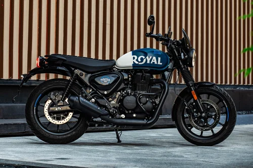

Starter motori
Hunter 350 i Meteor 350 — idealni za početnike koji žele ući u svijet motociklizma.

Royal Enfield Hunter 350
Opis
Hunter 350 je moderna reimaginacija klasičnog cruiser stila. Jednostavna, pouzdana i pristupačna za sve.
Specifikacije
- Motor: 349cc, jednocilindarski, 4-taktni
- Snaga: 20.2 KS @ 6000 RPM
- Moment: 27 Nm @ 4000 RPM
- Cijena: 4.890,00 €
Prednosti
- Odličan za početnike
- Niska potrošnja goriva
- Dobra pouzdanost
- Lagan i upravljiv
Mane
- Manja snaga za brže vožnje
- Bazična oprema
- Nije idealan za dugačke putovanje

Royal Enfield Meteor 350
Opis
Meteor 350 je elegantna i komforna cruiser opcija s više stilskog utjecaja. Savršen za rekreativne vožnje.
Specifikacije
- Motor: 349cc, jednocilindarski, 4-taktni
- Snaga: 20.2 KS @ 6000 RPM
- Moment: 27 Nm @ 4000 RPM
- Cijena: 5.290,00 €
Prednosti
- Veći komfort od Huntera
- Bolji sjedni položaj
- Lagan i upravljiv
- Dobar dizajn
Mane
- Malo skupiji od Huntera
- Sličan motor kao Hunter
- Nije za ozbiljne off-road avanture